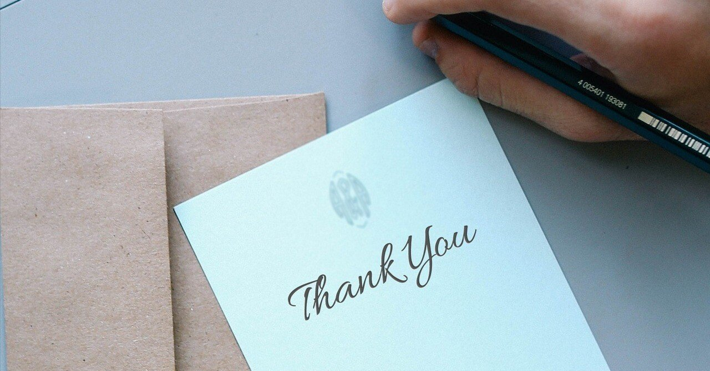

この文章を書いているのが、2023年3月31日。
そう、今はnoteで毎週投稿を始める前日の夜だ。この記事は予約投稿機能を使って、2年後の3月にアップされるようになっている。
2023年4月から毎週土曜日に記事を投稿しようと決めた。
そして、この記事のタイトルにもあるように、2025年3月末をもってそれを終了する。
この記事を皆さんが読んでくれているということは、無事に2年間走りきれたのだろう。
2年後に終わりを設定したのに特別な理由はない。漠然と継続するよりもゴールがあった方が、僕自身モチベーションを維持できるのではないかと考えた結果がこれである。
それに、2年というのは週換算で100週間とちょっと。
100週も連続で投稿し続けていたら、恐らく少しは飽きているはずだ。ねえ、2025年の僕？
もしこの2年間、欠かさず読んでくれた読者がひとりでもいるのなら、僕は心から感謝を伝えたい。もちろん、1回でも読んでくれた読者にも。
書き手としてこんなに嬉しいことはないし、なにより今後の励みになる。本当にありがとうございます。
毎週投稿をやめても、引き続き文章はアップしようと思う。
書くことは、僕にとって生きることでもある。だから、不定期にはなるだろうけど、これからも変わらず文章を皆さんに届けていきたい。そして、好きなタイミングでここのnoteにまた遊びにきてくれたら、僕はとても嬉しい。
2年というのは長いようで、きっとあっという間だ。
お互い取り巻く状況は多少なりとも変わっている。それでも皆さんには、この先もずっと幸せに日々を過ごしてほしいと心から願う。
2年後の僕。今そっちはどうですか？
この記事は、皆さんに感謝を伝える過去からの手紙であるとともに、未来の自分に宛てた手紙でもある。これが投稿されて少し懐かしい気持ちになっている自分にも、どうか元気で暮らしてほしい。
【2025年3月23日追記】
突然のご報告となり申し訳ありません。
2年前に書いたように、あらかじめゴールを決めたうえで2023年の春からnoteで毎週投稿を始めました。
確かに2年というのは長いようであっという間。
この間に得た成果は、書く習慣の定着化や文章力の鍛錬はもちろん、noteのありがたみをより実感できたことです。
日々読んでくださる読者の皆さんのおかげで、僕はなんとか生き続けることができたと思います。こう言うと大げさなのかもしれませんが、皆さんは僕の命の恩人なのです。
noteを始めて、今年の秋で9年目を迎えます。
アカウントを作った時は、まさかこんなにも長くこのプラットフォームを使うとは思ってもいなかったです。当時は色々な投稿サイトを転々としていて、｢なんとなく肌が合わない｣という理由だけで、同じ場所で文章を書くことが継続できていなかった時期でした。
そんな時にnoteに出会えたことは、僕の人生における数少ない幸運のひとつ。それに、noteを通して僕の書くものが皆さんに届けられる喜びは、今でもなんら変わりありません。
2年前の僕は「100週も投稿したら少しは飽きているだろう」と書いています。でも、そんなことはなかった。
それは読者の皆さんからの感想やリアクションに支えられ、以前よりさらにnoteを好きになれたからでもあります。
そして余談になりますが、現在僕はある専業作家の方に師事し、よりよい作品作りについて真剣に学んでいます。
こうして、再びプロを目指そうと本気になれたのも、この2年で培ったnoteでの定期的な投稿習慣があったからこそです。いわば僕にとって修練の場であったこの場所で、温かく見守ってくださった皆さんには感謝してもしきれません。
今後の活動は、月1回程度を目安に続けようと考えています。学んでいる最中の作品作りと、これまでと同様に自由気ままな文章を書くことは、また違った意味を持つと思っています。
それに、やっぱり僕のホームはnote。一時的でも離れてしまうことに寂しさがあったり。だから、細々ながらマイペースに続けていきます。
改めまして、この2年間ありがとうございました！ そして、これからもよろしくお願いします。この先もずっと、皆さんの素敵なnoteライフが続きますように💐